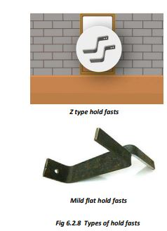
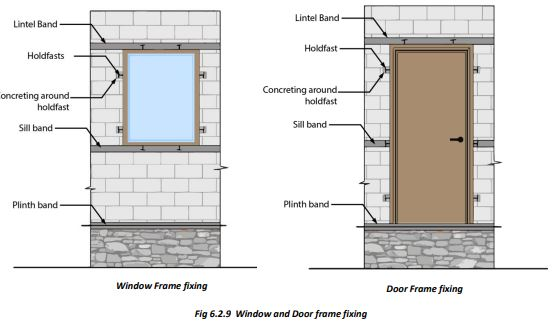

Fixing Doors and Window Frames
 
● Door and window frames are fixed in the walls during masonry work. Steel holdfasts are fixed to the frames, which are embedded in the walls with cement concrete. The middle holdfast of the door frame is fixed into the RCC Sill band.
● Window frames have holdfasts fixed to all four sides. The holdfasts fixed to the vertical members are fixed to the walls, and the top and bottom holdfasts are fixed to the RCC Lintel and Sill bands.
● For earthquake safety, make strong door and window frames of steel T-sections. Weld steel grills to the window frames.
● For earthquake safety, the door/window openings should be small and must be at least 60 cm away from wall corners.
● Two openings in a wall should be separated by at least 60 cm of masonry.
● All masonry walls should be bound together by 75 mm thick RCC bands at plinth, lintel, and roof levels.
● Provide vertical bars or RCC tie columns at masonry wall corners as per design.
● Once the RCC plinth band is cast, a strong door frame of steel T-section should be fixed to it.
● Position the door frames over the plinth at their exact locations. The sides of the frame should be in plumb. Check several times as the masonry goes up. Use shims if necessary to adjust the frame for level and plumb. Secure the door frames to the surrounding structure using holdfasts welded to the frames. These are placed in such a way that:
i) One pair (one on each side) is fixed 300mm above the plinth band,
ii) The middle pair is fixed into the sill RCC band,
iii) One pair is fixed 300mm below the lintel band,
iv) One pair welded at the top, goes into the RCC Lintel band.
● The holdfasts are fixed into the masonry or in the RCC bands as the masonry goes up. Frames fixed later become loose and do not provide safety against earthquakes.
● The holdfasts of window frames are also fixed in walls as the masonry goes up:
i) The bottom pair is fixed into the RCC sill band.
ii) The holdfasts fixed to the vertical sides of the frame are fixed into the masonry of walls as the masonry work goes up with cement concrete.
iii) The top pair is fixed into the RCC lintel band.
Ensure correct level and verticality of door and window frames.
Fix all door and window frames at the time of masonry work. Fixing them later makes holdfast joints loose.